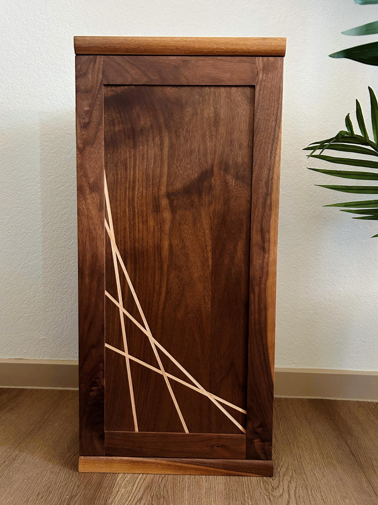
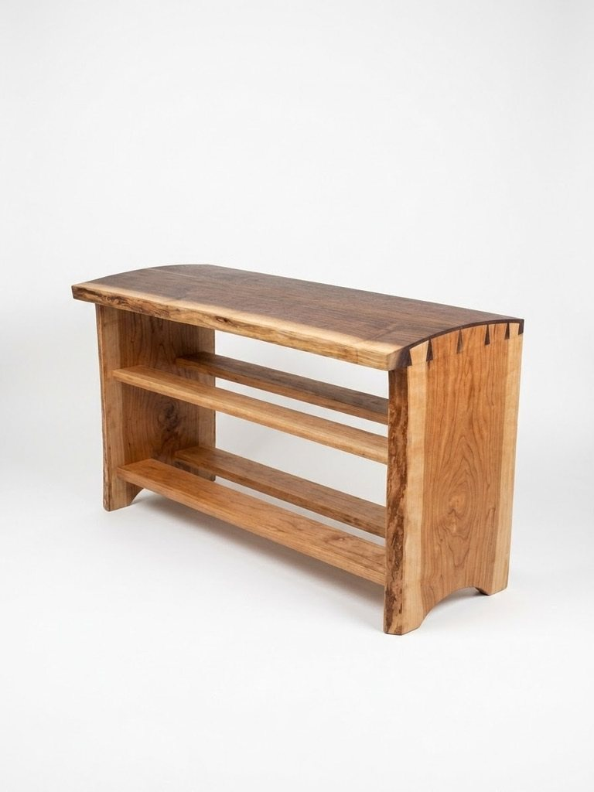
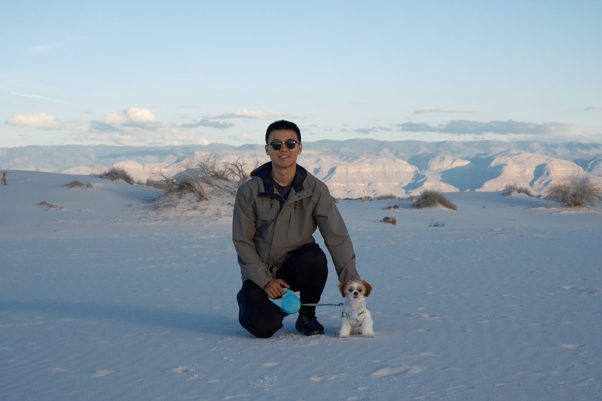

The practice
Wood is a finicky organism: it grows while alive and continues to move long after it is broken down. The work celebrates that grain, proportion, and the details that make an object worth keeping.
Meet Tim and the GouMang Team ↗ GouMang
GouMangNorthern Virginia / Est. 2021
GouMang Creations makes enduring furniture, cabinetry, and small wooden objects — one piece at a time.
Enter the workshop ↓
The practice
Wood is a finicky organism: it grows while alive and continues to move long after it is broken down. The work celebrates that grain, proportion, and the details that make an object worth keeping.
Meet Tim and the GouMang Team ↗
A piece with a story / 01
“Oakton” was my first project after moving to Northern Virginia. Inspired by a need for useful furniture in a new home, it pairs curved dovetails with an intentional live edge and the natural color variation of sapwood.
Read the Oakton story ↗The material
Grain, color, and texture are not details to hide. They are the beginning of every design decision—guiding a piece toward a form that feels inevitable.
Why customize & choose handmade? ↗

Beyond the workshop
From the Sonoran Desert to a new home in Northern Virginia, the landscape continues to shape how I see material, structure, and the quiet beauty of useful things.
More about GouMang ↗Commissions
For custom furniture and thoughtful objects, get in touch through Instagram.
Message @goumangcreations ↗